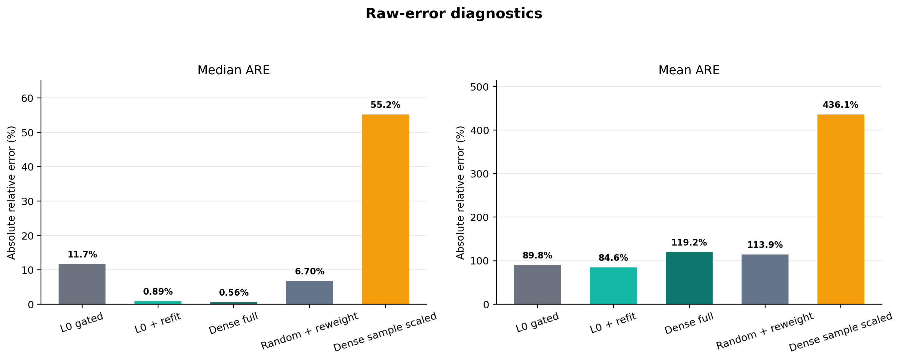
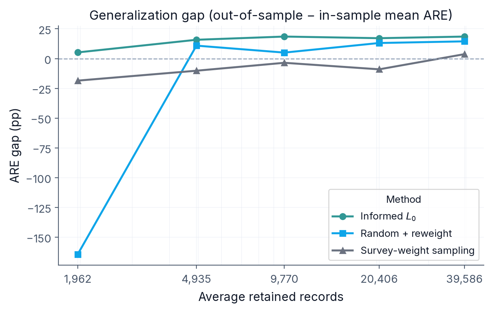
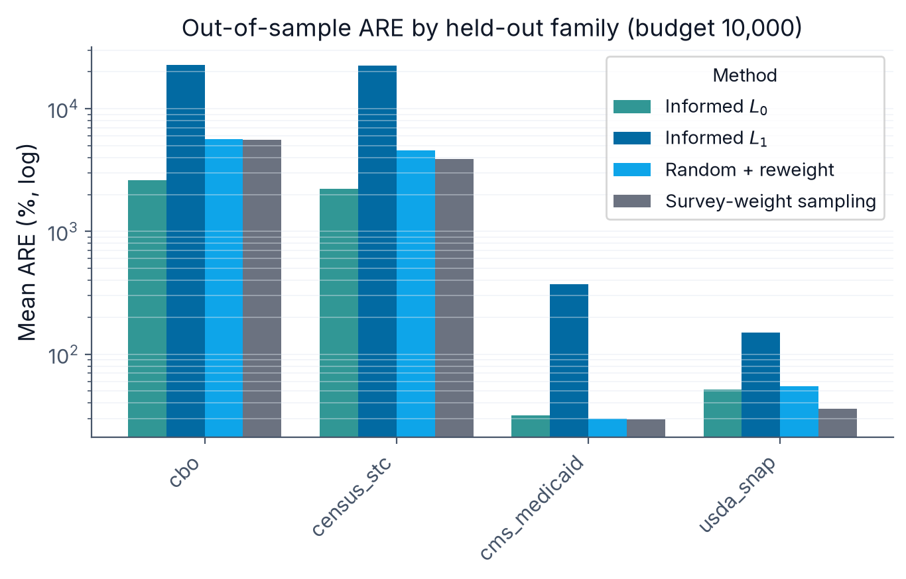
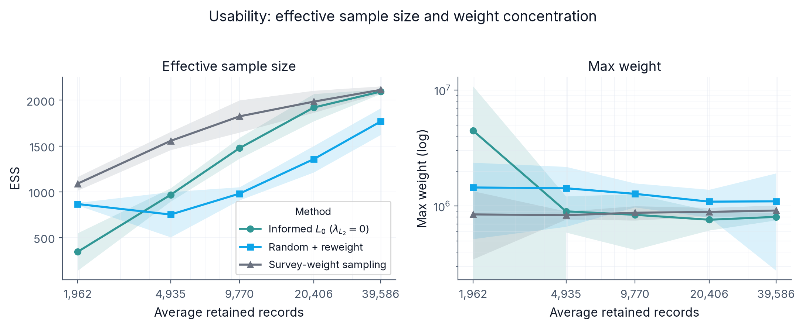
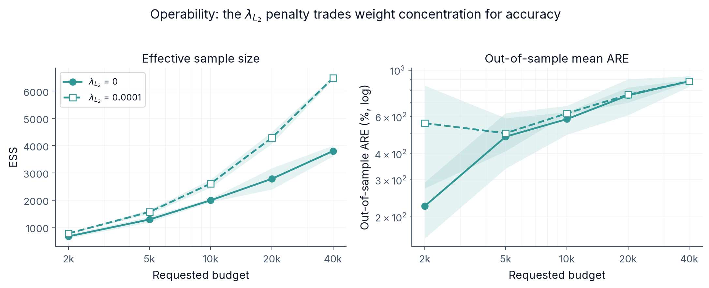
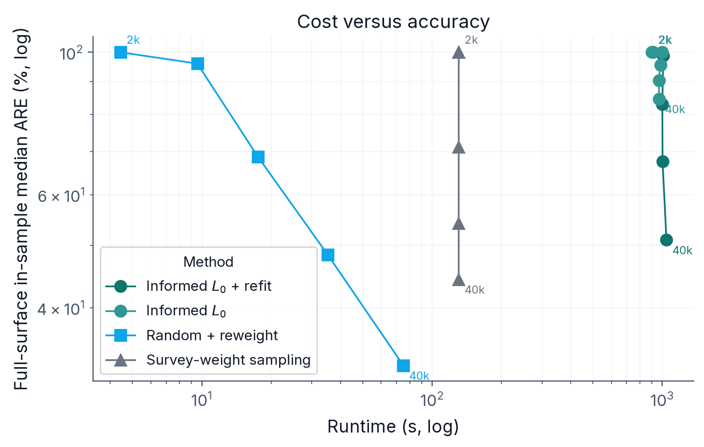

Subnational microsimulation needs survey microdata that reproduce administrative totals across nested geographies while staying usable inside a policy model. A pipeline built for fidelity can combine many data sources and add record-level variation, which produces a candidate dataset that is rich enough to represent the variation the targets describe and also large enough to be expensive to store, calibrate, and simulate. That dataset has to be reduced to a workable size, and the question is which records to keep.
We study this reduction as a sampling problem. Using \(L_0\) regularization with the Hard Concrete relaxation of Louizos et al. (2018), the method jointly selects which records to retain and assigns each retained record a positive weight. Selection responds to the calibration targets rather than being drawn at random, so the retained sample is informed by the quantities the dataset must reproduce. The gates make the retained-record count an explicit optimization variable, so one framework can produce a compact national dataset or a larger subnational one, while soft and hard concentration controls bound how large individual weights can grow. Because the optimization that selects records also calibrates them, the reduced dataset continues to match its targets.
We implement the method within Populace, PolicyEngine’s pipeline for microsimulation dataset construction, and present a proof of concept on its current target surface. The comparison holds the candidate universe, the target set, and the record budget fixed, and varies only how records are chosen, across three samplers: informed \(L_0\) selection, random sampling followed by gradient-descent reweighting, and survey-weight sampling, which draws records with probability proportional to a prior calibration’s weights (the unbiased Hansen–Hurwitz scheme). All three fit weights with the same calibrator, so the experiment isolates the selection step rather than the calibration. Informed \(L_0\) selection reaches lower out-of-sample error than random sampling under aggressive compression, where a random draw is too small to span the targets: at a 2,000-record budget its out-of-sample median absolute relative error is 39.8% against random sampling’s 57.0%. The gap is starker in the tail-sensitive mean (53.5% against 2,293%), which reflects the seed-to-seed instability of a small random draw that informed selection avoids. The methods converge as the record budget grows, and above roughly 5,000 records random sampling becomes the more accurate of the two; survey-weight sampling is the least accurate throughout. The method’s distinctive value is therefore operational rather than a uniform accuracy gain: it sets the dataset size, geographic emphasis, and weight concentration through explicit parameters in one optimization, and it avoids the variance of a poor random draw at tight budgets. Matching a demanding target system can still load substantial population mass onto a few records, a cost we report rather than hide. We report these results as a proof of concept on a national and state target surface, and leave the larger build-and-prune and subnational settings the controls are designed for to future work.
Keywords: microsimulation, survey calibration, subsampling, \(L_0\) regularization, subnational analysis
Tax-benefit microsimulation models apply policy rules to household microdata to estimate fiscal and distributional effects. At the national level, that usually means starting from a survey such as the Current Population Survey (CPS), improving measured incomes and program participation, and adjusting weights so the dataset reproduces known aggregates. Subnational work is harder. Analysts often want estimates for states, congressional districts, or local areas, but the underlying survey was not designed to support all of those geographies at once.
That gap matters in practice, because many reforms are proposed, administered, or debated below the national level. A state tax proposal needs state-specific incomes, filing patterns, and benefit participation. District-level analysis needs those same outcomes to aggregate correctly within each district while staying consistent with state and national totals. A usable subnational dataset therefore has to satisfy a hierarchical calibration problem rather than a single national one.
One way to meet that demand is to build a dataset that carries as much of the relevant variation as possible. A pipeline can combine several surveys and administrative files, impute the variables that any single source lacks, and attach the geographic detail that local analysis needs. Each of these steps enriches the records, and some add records. The result is a candidate dataset rich enough to represent the variation the targets describe, and large enough that it becomes expensive to store, calibrate, and simulate. A file with millions of active records supports detailed subnational work but is slow to run; a much smaller file is easier to ship, but only if the loss in fidelity is acceptable.
The candidate dataset therefore has to be reduced to a size that can be shipped and simulated, and this paper treats that reduction as a sampling problem: given the large candidate universe and a fixed record budget, which records should the final dataset keep, and what weight should each kept record carry? The simplest answer is to draw a random subset and reweight it to the targets. We study an alternative in which the selection itself is informed by the targets.
The method is \(L_0\) regularization with the Hard Concrete relaxation (Louizos et al. 2018). Each candidate record receives a gate that the optimizer can drive toward zero or one, and the expected number of open gates enters the objective directly. Minimizing calibration error and the gate count together selects a subset of records and fits their weights in one optimization. The retained-record count becomes a quantity the optimizer controls rather than a fixed draw, and two concentration controls (a soft penalty and a hard per-record cap) limit how concentrated the fitted weights can become. In practical terms, one framework can target a compact national dataset or a larger subnational dataset, at a chosen record budget, with weights kept inside a usable range.
We situate this work in Populace (PolicyEngine 2026b), PolicyEngine’s pipeline for microsimulation dataset construction. Populace passes a single weighted data structure through a sequence of modular stages—source loading, imputation, geographic assignment, target construction, and calibration—each implemented as a separate package operating on that shared structure. Because the stages are modular, the data sources, the imputation model, the geographic assignment, and the calibration method are interchangeable components rather than fixed code, and the calibration step studied here is one such component. The paper describes the pipeline at the level needed to follow the calibration step, and then describes the configuration used here.
This paper is a proof of concept on Populace’s current target surface: it asks whether \(L_0\) selection with Hard Concrete gates can produce a sparse, calibrated dataset on the targets Populace assembles today. Local-area and subnational calibration are the production motivation for the method and a future application of it, rather than results this paper presents.
The empirical question is whether informed selection earns its added complexity. We ask three things. First, when does informed \(L_0\) selection reproduce the targets more accurately than random sampling and survey-weight sampling at the same record budget, and how does that comparison change as the budget tightens? Second, does the retained sample generalize, in the sense that it also matches whole target families held out of the fit? Third, does the framework give usable control over the size of the output, the geographic level it focuses on, and the concentration of the fitted weights, and what does tightening the concentration control cost in accuracy? The answers are regime-dependent: informed selection’s accuracy advantage over the baselines concentrates at small budgets, while its control over size, geography, and weight concentration is what distinguishes it at the larger budgets at which a dataset is shipped.
The rest of the paper follows that structure. Section 2 places the work in the literature on spatial microsimulation, survey calibration, and sparse selection. Section 3 describes the base microdata, the Populace pipeline, and the administrative targets. Section 4 presents the calibration method and the sampling experiment design. Section 5 reports the comparison against the sampling baselines and the behaviour of the size, geography, and weight controls. Section 6 interprets those results and discusses their limits, and Section 7 concludes.
Subnational microsimulation starts from a recurring problem: a national survey carries the behavioural and demographic detail needed for policy modelling, but it does not contain enough observations in every local area to support direct estimation. Spatial microsimulation addresses that gap either by reweighting existing survey records or by building synthetic small-area populations from aggregate constraints (Tanton 2014; O’Donoghue et al. 2014).
This distinction matters for the present work, because our pipeline is a reweighting system built on observed CPS households. It places households across geographies to create local variants, but the core problem remains the calibration of survey-based microdata to administrative targets, which keeps calibration methods as the closest reference point.
The spatial microsimulation literature supplies further context. Williamson et al. (1998), Huang and Williamson (2001), and Harland et al. (2012) describe combinatorial and synthetic-population approaches that search over record assignments area by area. Tanton et al. (2011) and Lovelace and Dumont (2016) discuss reweighting for small-area estimation and policy analysis. These methods usually target one geographic layer at a time, whereas our setting asks one weighted dataset to reproduce state and national targets together.
Let \(i = 1, \ldots, n\) index sampled units, let \(d_i\) denote the initial design weight for unit \(i\), and let \(\mathbf{x}_i \in \mathbb{R}^p\) denote the auxiliary variables used for calibration. Survey calibration seeks adjusted weights \(w_i\) whose weighted totals match known population totals: \[\begin{equation} \sum_{i=1}^{n} w_i \mathbf{x}_i = \mathbf{T}, \label{eq:calibration_constraint} \end{equation}\] where \(\mathbf{T} \in \mathbb{R}^p\) is the vector of published totals (Deville and Särndal 1992; Särndal 2007). The auxiliary variables may be counts, indicators, or continuous quantities such as income components.
The subnational problem extends this setup in two ways. The target vector draws on several administrative sources, so it mixes count and dollar constraints. The constraints are also nested by geography: district totals should sum to state totals, which should sum to national totals after uprating and reconciliation. At production scale this yields a large target system with substantial collinearity across rows.
Two classical methods are the standard references for this kind of problem. Generalized regression (GREG) minimizes a distance from the initial weights subject to the calibration equations (Deville and Särndal 1992; Särndal 2007). It accepts quantitative targets directly and is well understood, but it can return negative weights and becomes harder to solve as the target system grows and its rows become collinear. Negative weights are acceptable in some estimation settings and awkward in a microdata file meant for tax-benefit simulation, where a household is expected to represent positive population mass.
Iterative proportional fitting (IPF, or raking; Deming and Stephan 1940; Ireland and Kullback 1968) adjusts weights multiplicatively so that selected margins match published totals. It preserves non-negativity and avoids matrix inversion, which makes it a natural choice for count-style margins, but classical IPF is built for categorical margins rather than arbitrary linear dollar targets and does not encode a large mixed hierarchical system in one pass.
A third approach treats calibration as an optimization problem to be solved numerically. The two methods above are special cases of one problem: Deville and Särndal (1992) define the calibrated weights as those closest to the design weights, under a chosen distance, subject to reproducing the targets, with GREG and raking the closed-form solutions for particular distances. When the target system is large, collinear, mixes count and dollar constraints, and restricts weights to be positive, the classical Newton and Lagrange solvers become hard to apply or fail to converge, which motivates minimizing the calibration objective directly. Espuny-Pujol et al. (2018) do so with a global optimization that enforces the range restrictions on the weights explicitly, and minimum-distance reweighting has long been used this way in tax microsimulation (Creedy 2003). At the scale of an enhanced microdata file the practical solver is stochastic gradient descent: the weights are parameterized to stay positive, typically in log space; a loss measures the relative discrepancy between the weighted estimates and the targets; and an optimizer such as Adam (Kingma and Ba 2015) minimizes it, which scales to thousands of mixed, hierarchical targets without inverting a matrix. Woodruff and Ghenis (2024) calibrate PolicyEngine’s enhanced CPS in exactly this way.
These estimators answer a calibration question rather than a sampling one: given a fixed set of records, they find weights that match the targets. The method studied here selects records and fits weights at the same time, extending the gradient-based calibration just described with explicit record selection. A direct head-to-head benchmark of the sampling method against GREG and IPF is left to future work; here they serve as the calibration context the sampler is expected to respect.
Reducing a large candidate dataset to a fixed budget is a sampling problem with a long statistical history, and several established methods reduce a microdata file by selecting actual records to match known totals. They differ mainly in where calibration enters. We review the two with the clearest track record in microdata construction; random sampling and survey-weight sampling form the matched-budget comparison set in Section 4. We also note the coreset view from machine learning, where a weighted subset is chosen so that a model fit on the subset approximates the fit on the full data (Feldman 2020; Bachem et al. 2017).
The simplest reduction draws records at random. Under simple random sampling without replacement each record has inclusion probability \(n/N\) and design weight \(N/n\), and the Horvitz–Thompson estimator recovers population totals without bias (Horvitz and Thompson 1952; Cochran 1977; Särndal et al. 1992). A random subsample preserves the conditional distribution of the data in expectation, but it does not reproduce administrative totals, so it has to be calibrated after the draw. Random selection is also the reference that the data-reduction literature treats as the genuine test: informativeness-based schemes are measured against it (Ma et al. 2015), and pruning methods in deep learning often fail to beat it at high reduction ratios (Guo et al. 2022). In our setting it is the reduce-first, calibrate-after baseline, a random draw followed by gradient-descent reweighting to the targets.
A second approach calibrates first and reduces second. Given fractional weights from a calibration step, survey-weight sampling selects records with probability proportional to those weights, which turns a reweighted file into a finite, integer-weighted population that approximately preserves both the calibrated totals and the distribution. This is unequal-probability, probability-proportional-to-size sampling in the survey tradition (Hansen and Hurwitz 1943; Horvitz and Thompson 1952), applied to microsimulation as integerisation. Lovelace and Ballas (2013) catalogue the common integerisation methods and show that truncate-replicate-sample reproduces the targets most accurately while fixing the reduced population to an exact size; earlier top-up schemes are due to Ballas et al. (2005). Because the selection probabilities are the calibration weights, survey-weight sampling presupposes a calibration step, so in our comparison it is the calibrate-then-reduce baseline, with gradient descent supplying the weights.
These methods share the idea that a carefully chosen weighted subset can stand in for a larger dataset, but they reach it differently: random sampling ignores the targets and repairs the gap afterwards, while survey-weight sampling inherits the targets from a prior calibration. A third tradition makes selection itself the calibration: combinatorial optimisation chooses a combination of records, with integer multiplicities, to match the benchmark totals directly, searched with metaheuristics such as simulated annealing (Williamson et al. 1998; Voas and Williamson 2000). It is the closest precedent for target-informed selection, but it is discrete and gradient-free; we note it as related work rather than include it in the matched-budget comparison. The method studied here also pursues the targets at selection, but with a continuous, gradient-based relaxation that fits the selection and the weights jointly. The next subsection sets out that relaxation.
The \(L_0\) norm counts the non-zero entries in a vector. Applied to record weights, it counts the records that remain active, which is exactly the size of the retained sample. Selecting a subset of a chosen size is therefore an \(L_0\)-penalized problem. The difficulty is that the \(L_0\) norm is non-differentiable and combinatorial, so it cannot be minimized by gradient descent in its raw form.
Louizos et al. (2018) make the penalty differentiable by attaching a stochastic gate \(z_i \in [0, 1]\) to each parameter and optimizing the expected \(L_0\) norm. The gate is drawn from a Hard Concrete distribution: a binary concrete (continuous-relaxation) variable stretched beyond the unit interval and then clipped back into it. With a learned location parameter \(\log \alpha_i\) and a fixed temperature \(\beta\), draw \(u \sim \mathrm{Uniform}(0, 1)\) and set \[\begin{align} s_i &= \sigma\!\left(\frac{\log u - \log(1 - u) + \log \alpha_i}{\beta}\right), \\ \bar{s}_i &= s_i (\zeta - \gamma) + \gamma, \\ z_i &= \min\!\big(1, \max(0, \bar{s}_i)\big), \label{eq:hardconcrete} \end{align}\] where \(\sigma\) is the logistic function and \(\gamma < 0 < 1 < \zeta\) are fixed stretch bounds. Stretching \(s_i\) from \((0, 1)\) to \((\gamma, \zeta)\) and clipping to \([0, 1]\) places point masses at exactly \(0\) and exactly \(1\), so a gate can switch a record fully off or fully on while staying differentiable in between.
Because the gate has a closed-form probability of being non-zero, the expected \(L_0\) norm is differentiable. The probability that gate \(i\) is active is \[\begin{equation} \Pr(z_i \neq 0) = \sigma\!\left(\log \alpha_i - \beta \log \frac{-\gamma}{\zeta}\right), \label{eq:l0penalty} \end{equation}\] and the \(L_0\) penalty is the sum of these probabilities over all records, \(\sum_i \Pr(z_i \neq 0)\), which is the expected number of retained records; minimizing it pushes gates toward zero. At test time the noise is removed and the gate is evaluated deterministically, \[\begin{equation} \hat{z}_i = \min\!\left( 1, \max\!\left( 0,\, \sigma(\log \alpha_i)(\zeta - \gamma) + \gamma \right) \right), \label{eq:deterministic_gate} \end{equation}\] which returns an exact zero for any record driven far enough off and an exact one for any record driven far enough on, with intermediate values in between. The exact zeros make the weight vector exactly sparse; a record left with an intermediate gate is retained with its fitted weight scaled by the gate.
The two pieces depend on each other, which is the point worth stressing for readers new to this construction. The \(L_0\) penalty states the objective, that fewer active records are preferred, but on its own it is not optimizable by gradient methods. The Hard Concrete gate makes that objective differentiable, but on its own, without the penalty, it carries no pressure toward sparsity and leaves every gate open. Used together they turn record selection into a term the optimizer can minimize alongside calibration error. This is what makes the retained-record count a control variable rather than the result of a separate thresholding step.
Beyond the calibration step itself, Woodruff and Ghenis (2024) embed that gradient-based reweighting in a national pipeline that first imputes tax variables from the IRS Public Use File onto CPS records, and that regularizes the weights with dropout rather than an explicit selection mechanism. The present work keeps the gradient-based calibration but replaces dropout with the \(L_0\) and Hard Concrete gates of the previous subsection, so that record selection becomes explicit and the fitted weights are exactly sparse. It also runs within Populace, a pipeline that expresses dataset construction as a sequence of modular stages over a shared data structure. The data sources, the imputation model, the geographic assignment, and the calibration method are interchangeable components rather than fixed steps, which lets the same pipeline support different countries and different methodological choices. Section 3 describes the pipeline and the configuration used here.
The calibration problem is defined by two inputs: the household microdata that form the candidate universe, and the administrative targets the calibrated dataset must reproduce. This section describes how Populace assembles the candidate microdata and how this study selects its targets. The pipeline is the harness that produces the calibration problem; it is not itself the object of evaluation.
Populace builds a microsimulation dataset by passing a single weighted data structure—a sampling frame holding the records, their weights, and provenance—through a sequence of stages. Each stage is a separate package that reads and writes that shared frame: it loads the source surveys, combines them into one record universe, imputes missing variables, assigns geography, constructs the calibration targets, and calibrates. Because every stage operates on the same structure, the imputation model and the calibration method are components that can be swapped without rewriting the pipeline, and the method studied here is one calibration option among those the pipeline supports.
This modular structure makes the candidate universe a property of the configuration rather than an accident of the code: the source-loading and imputation stages set what information each record carries, and calibration sets which records survive and at what weight. Populace follows a generate-then-prune design, assembling the candidate universe once and pruning it to a deployable budget at the calibration stage.
For this build the candidate universe is the Populace-US 2024 household file:
75,112 households at period 2024, one row per household. We
pin the exact artifact for reproducibility: HuggingFace repository
policyengine/populace-us, snapshot be80a14f,
built from Populace commit
6e1bcd0, with H5 SHA-256 beginning f0af2519.
The repository’s main branch now points to a newer release,
so the numbers reported here are tied to this pinned snapshot and file
hash.
The primary source is the Current Population Survey Annual Social and Economic Supplement (CPS ASEC; U.S. Census Bureau 2024), a nationally representative household survey from the US Census Bureau and the Bureau of Labor Statistics. The CPS provides demographic structure, household relationships, labour income, transfer income, and reported participation in programmes such as SNAP, Medicaid, SSI, and TANF.
The CPS is not a complete tax-benefit dataset on its own. Some tax variables are missing, others are measured with error, and top incomes are imperfectly captured relative to tax records (Burkhauser et al. 2012). Benefit receipt is also underreported relative to administrative sources (Meyer et al. 2015). The pipeline therefore augments the CPS before calibration.
The pipeline enriches the CPS base by imputing variables from administrative and survey donors. It imputes tax-return detail from the IRS Public Use File (PUF; Bryant 2023) onto CPS records following Woodruff and Ghenis (2024): the PUF carries detailed tax-return information but lacks household structure and demographic coverage, so quantile regression forests (Meinshausen 2006) predict the PUF variables on the CPS; Meyer et al. (2020) assess the accuracy of such survey–administrative tax imputations. The imputation is sequential and regime-gated, drawing from a weighted bootstrap, so later variables condition on earlier imputed values. The same machinery draws further variables from the donors in Table 1 where the CPS is thin. Each step adds variables to the existing households rather than new records, so the candidate universe stays at one row per household.
| Donor source | Variables contributed (this build) |
|---|---|
| CPS ASEC | Household and person structure, demographics, labour and transfer income, programme participation, unit assignment |
| IRS PUF (2015, uprated) | Itemized-deduction detail, QBI/SSTB components, partnership and S-corp income, selected tax detail |
| CPS ORG | Hourly wage, paid-hourly and union status, weekly hours, overtime inputs |
| SCF | Wealth and net-worth components |
| SIPP | Tips |
| MEPS-IC | Employer-sponsored insurance premiums |
| ACS (2022) | Rent (pre-subsidy) |
| CMS marketplace PUFs and CPS ASEC | ACA take-up and the benchmark-plan ratio |
Each household carries a geographic identity. The CPS ASEC reports the household’s state, which supports the state-level administrative targets this study calibrates to. The assembled file also carries county, congressional-district, tract, and block identifiers, but this study calibrates only to national and state targets, so the finer levels are present without being scored. For this build the candidate universe is one row per household: records are not replicated across alternative geographic placements, so the candidate count is the household count of 75,112.
The target system combines aggregates from several administrative sources at the national and state levels. This study does not calibrate to every target the pipeline could construct. It calibrates to a prioritized subset, and it reports that subset explicitly rather than describing it as a complete or maximal target set. Appendix 8 lists the target families used and the reason for including them. The exact counts come from each experiment’s run manifest rather than from a pipeline-wide inventory.
| Target family | Geographic level | Targets |
|---|---|---|
IRS Statistics of Income
(irs_soi) |
National, state | 3,107 |
Census population estimates
(census_population) |
National, state | 936 |
Medicaid and CHIP, CMS
(cms_medicaid) |
National, state | 104 |
ACA marketplace, CMS
(cms_aca) |
State | 102 |
SNAP, USDA (usda_snap) |
National, state | 52 |
State income tax, Census STC
(state_income_tax) |
State | 45 |
TANF, HHS ACF
(hhs_acf_tanf) |
National, state | 30 |
Social Security OASDI, SSA
(ssa) |
National | 6 |
CBO revenue projections
(cbo) |
National | 5 |
JCT tax expenditures
(jct) |
National | 5 |
Medicare, CMS
(cms_medicare) |
National | 1 |
| Total | 4,393 |
Counts are read from the run manifest. The cbo
family is held out as a validation-only diagnostic and is never used to
fit weights (Section 4.5); the source for each family is listed
in Appendix 8.
This section describes the calibration method that selects and weights records, and then the design of the experiment that evaluates the method as a sampler.
The calibration matrix \(\mathbf{M} \in \mathbb{R}^{m \times n}\) maps \(n\) candidate records to \(m\) targets. Entry \(M_{ji}\) is the contribution of candidate \(i\) to target \(j\): an indicator or count for count targets, and a simulated tax or benefit value for dollar targets. The matrix is built from PolicyEngine simulations evaluated under the policy rules that apply to each record’s assigned geography, and is stored in sparse form. Given a weight vector \(\mathbf{w} \in \mathbb{R}^n\), the estimate of target \(j\) is \[\begin{equation} \hat{t}_j = \sum_{i=1}^{n} M_{ji}\, w_i. \label{eq:estimate} \end{equation}\]
The three methods compared in this study fit weights with the same
calibrator, the calibrate routine in Populace. It minimizes a capped, weighted mean
absolute percentage error (capped weighted MAPE) of the estimates
against the targets, \[\begin{equation}
\mathcal{L}_{\mathrm{cal}}(\mathbf{w}) =
\frac{\sum_{j=1}^{m} \omega_j \min\!\left(\left|\dfrac{\hat{t}_j -
t_j}{s_j}\right|,\, c\right)}
{\sum_{j=1}^{m} \omega_j},
\label{eq:loss_cal}
\end{equation}\] where \(s_j =
\max(|t_j|, 1)\) scales each target by its own magnitude, with a
floor of one unit so a zero-valued target stays well defined; \(c\) caps the contribution of any single
hard-to-fit target, so one badly conditioned target cannot dominate the
gradient, and is set to \(c = 10\) in
the runs reported here; and \(\omega_j\) are per-target weights,
normalised by their sum so only their relative magnitudes matter. The
error is relative, so a one per cent miss on a small target and on a
large one count the same. The weights are parameterized in log space,
\(w_i = \exp(\theta_i)\), so the fitted
weights stay positive; an Adam optimizer (Kingma and Ba 2015) implemented in
PyTorch (Paszke et al. 2019) minimizes the loss, and
the total weight is held to the input population. On a fixed set of
records this calibrator answers a calibration question: it finds weights
that match the targets. The two baselines use it unchanged; informed
\(L_0\) extends it.
The per-target weights \(\omega_j\) in the runs reported here follow Populace’s production US-fiscal weighting, computed through the same code path the production US build uses rather than a separate reimplementation. The weighting is built in four steps. Each target is first assigned to one of two value bases from its measure metadata: a count basis (indicator, enrollment, recipient, and return-count measures) or an amount basis (dollar measures). Within a basis, a target’s raw weight is proportional to \(\max(|t_j|, 1)^{1/2}\), the square root of its own magnitude, so a larger aggregate carries more weight but sublinearly (a target a hundred times larger receives about ten times the weight), and these raw weights are normalised to mean one inside each basis. The two bases are then rescaled to contribute equal total weight, so the far more numerous dollar cells do not swamp the count targets. A final step sets the mean weight to one. Because the loss divides by \(\sum_j \omega_j\), only the relative weights enter the objective and their absolute scale does not.
Informed \(L_0\) sampling adds two terms to the shared calibrator that turn weight fitting into record selection. Each candidate \(i\) carries a Hard Concrete gate \(z_i \in [0, 1]\) (Louizos et al. 2018), the gated estimate becomes \(\hat{t}_j = \sum_i M_{ji} w_i z_i\), and the optimizer minimizes \[\begin{equation} \mathcal{L}(\mathbf{w}, \boldsymbol{\alpha}) = \mathcal{L}_{\mathrm{cal}}(\mathbf{w}, \mathbf{z}) + \lambda_{L_0} \sum_{i=1}^{n} \bar{z}_i + \lambda_{L_2} \frac{1}{n} \sum_{i=1}^{n} \left(\frac{w_i}{w_{0,i}}\right)^2. \label{eq:loss} \end{equation}\] The first term is the capped weighted MAPE of the calibration-loss equation, now evaluated on the gated weights \(w_i z_i\). The second term is the \(L_0\) penalty and sets the sample size: \(\bar{z}_i = \Pr(z_i \neq 0)\) is the expected activation of gate \(i\) (the Hard Concrete activation probability), so \(\sum_i \bar{z}_i\) is the expected number of open gates, the expected retained-record count, and \(\lambda_{L_0}\) sets how aggressively the optimizer prunes. Rather than set \(\lambda_{L_0}\) by hand, each build tunes it by an outer bisection to a requested record count (Appendix 9). The third term is a soft concentration penalty: \(\lambda_{L_2}\) multiplies the mean squared ratio of each fitted weight to its initial weight \(w_{0,i}\), which discourages the optimizer from carrying the fit on a few heavily inflated records. It applies to informed \(L_0\) and is zero for the two baselines, which run the shared calibrator without the gate and concentration terms.
Read as a sampler, the calibration term keeps the retained sample
faithful to the targets, the \(L_0\)
penalty sets the sample size, and the \(L_2\) penalty governs weight concentration.
The concentration term matters because an \(L_0\) penalty on its own can reach a sparse
solution that is still unusable: the optimizer can match the targets by
placing very large weights on a few retained records. Both concentration
controls act on the ratio of each fitted weight to its initial weight,
\(w_i / w_{0,i}\). The \(L_2\) term is a soft penalty on the mean
square of that ratio that discourages large inflations smoothly, and it
is the control we sweep to trace the accuracy-concentration trade-off.
max_weight_ratio is a hard per-record cap on the same
ratio: no fitted weight may exceed a fixed multiple of that record’s
initial weight, clamped after every optimizer step. The soft penalty
shapes the whole weight distribution during optimization; the cap bounds
the single largest weight. Size and concentration are therefore set by
separate controls: \(\lambda_{L_0}\)
fixes how many records remain, and the \(L_2\) penalty and
max_weight_ratio fix how concentrated their weights may
become. The headline runs leave the cap off and set \(\lambda_{L_2}=0\), so the reported accuracy
frontier is the pure-calibration result; Section 5.3 reports \(\lambda_{L_2}=10^{-4}\) beside it as an
operability contrast, tracing what the penalty buys in effective sample
size against what it costs in fit. Tightening either control bounds how
much population a single record can carry, at some cost to calibration
fit. Appendix 10 lists the full
configuration, and Appendix 11 gives
the optimization loop as the algorithm pseudocode.
The gates and the weights are learned together: the gate decides whether a record is in the sample, and the weight decides how much it counts. Because both are fit against the same calibration loss, selection is informed by the targets: a record survives when keeping it helps match a target that would otherwise be missed. This is the sense in which the method is a target-informed sampler rather than a reweighting of a fixed random draw.
After optimization the gates are evaluated deterministically, so the retained-record count is read from the solution rather than chosen by a post-hoc cutoff. The retained records and their weights are assembled into a dataset for PolicyEngine. Appendix 12 summarizes the assembly step, which matters operationally but is not the object of the experiment.
The experiment evaluates whether informed selection produces a better dataset than the alternative samplers at the same record budget. From one candidate universe and one target set, we compare informed \(L_0\) selection against two matched-budget baselines, which span where calibration enters the reduction (Section 2.4):
Informed \(L_0\) sampling with Hard Concrete gates. The shared calibrator with the gate and concentration terms above selects records and fits their weights jointly at a chosen budget, set through \(\lambda_{L_0}\).
Random sampling with gradient-descent reweighting. A random subset of the candidate universe of the same size is drawn, then the shared calibrator fits its weights to the same targets without the gate or concentration terms. This is the reduce-first, calibrate-after baseline.
Survey-weight sampling (Hansen–Hurwitz). The shared calibrator first reweights the full universe to the targets, and records are then drawn with probability proportional to those weights, with replacement; each of the \(n\) draws receives an equal share \(W/n\) of the total weight \(W\), and repeated draws accumulate on the same record. This is the unbiased Hansen–Hurwitz integerisation (Hansen and Hurwitz 1943) of the dense weights, which preserves their expectation at every budget, and is the calibrate-then-reduce baseline.
Holding the candidate universe and the target set fixed isolates the effect of how records are chosen. We sweep the retained-record budget across 2,000, 5,000, 10,000, 20,000, and 40,000 records, from aggressive compression of the candidate universe up to a large fraction of it, and run each budget over three calibration seeds (seeds \(0\)–\(2\)). Informed \(L_0\) sets the achieved budget at each grid point through its \(\lambda_{L_0}\) bisection, and the baselines are matched to the same retained count.
A sampler can match the targets it is fit to and still generalize poorly. To test generalization, the design separates the targets used to fit the weights from the targets used to score the result, and holds out whole target families rather than a random subset of targets. The reason is structural: targets within a family nest (a national total is the sum of its state cells), so a random target split leaks: a held-out cell is nearly determined by its retained siblings, which would overstate generalization. Holding out a whole family removes that leakage.
The fixed holdout comprises the cms_medicaid,
usda_snap, and state_income_tax families, 201
targets spanning three domains (Medicaid enrollment and spending, SNAP,
and state income tax). These families are held out of every method’s fit
and scored only out-of-sample. Each held-out family keeps a related
family in the fit, so the test asks each method to reproduce a held-out
family while a structurally similar family remains in the fit, rather
than orphaning a domain entirely (Table 3).
The cbo family is additionally held out as a Populace validation-only family (forecast and
aging projections used as diagnostics rather than contemporaneous
targets), so it is never fit. Of the 4,393 targets in the
system, 4,187 are used to fit the weights and 206 are held
out (the 201 contemporaneous targets plus the 5 cbo
validation-only targets).
| Held-out family | Domain | Related family kept in the fit |
|---|---|---|
cms_medicaid |
Medicaid enrollment and spending | cms_aca,
cms_medicare (other health-program enrollment) |
state_income_tax |
State income tax | irs_soi (federal income-tax
aggregates) |
usda_snap |
SNAP enrollment and spending | hhs_acf_tanf (a related
means-tested transfer) |
cbo |
CBO revenue and aging projections | none; validation-only, never fit |
Family counts are read from the run manifest. The related-family pairing is a property of the target system, not of any method.
As a stricter robustness check we also rotate whole families through
the holdout in a family-grouped five-fold design: the families are dealt
into five folds balanced by target count, and each fold is held out in
turn. Because the folds hold out structurally different families rather
than independent draws, we report them per fold rather than as a single
inferential test (Section 5.2); the rotation
surfaces in particular the fold that holds out the dominant
irs_soi family.
Each run reports the metrics in Table 4 for the scored targets, both in-sample and out-of-sample. They fall into two groups: accuracy measures, which ask how closely the weighted estimates reproduce the targets, and representativeness measures, which ask at what cost in weight concentration and compute that accuracy is bought.
| Metric | Definition | Why reported |
|---|---|---|
| Median ARE | Median absolute relative error \(|\hat{t}_j - t_j| / |t_j|\) over scored targets | Headline accuracy; robust to the near-zero-denominator tail |
| Mean and max ARE | Mean and maximum of the same per-target errors | Reported alongside the median, flagged as tail-sensitive |
| Micro vs. macro average | Mean over all targets vs. mean of the per-family means | The micro mean is dominated by
irs_soi (71% of targets); the macro mean weights each
family equally |
| Effective sample size | \(\mathrm{ESS} = (\sum_i w_i)^2 / \sum_i w_i^2\) and the implied design effect | A sampler can fit the targets while concentrating population mass on a few records, so ESS is a primary result, not a footnote |
| Retained count, max weight, runtime | Non-zero record count, largest fitted weights, wall-clock time | Sample size, weight concentration, and compute cost |
Errors are reported by geographic level and by target family as well as in aggregate, because a sampler can match national totals while missing local ones, or match one source while missing another.
A small number of targets have denominators so small that a single record can swing their relative error past 100 per cent. We identify these structurally rather than by an arbitrary cutoff: target \(j\) is denominator-degenerate when its value is smaller than its identifiability floor \(\max_i |M_{ji}|\, w_{0,i}\), the largest contribution any single record makes at its initial weight. For such a target the absolute relative error reflects integer placement noise rather than calibration quality. Rather than winsorize or trim the error distribution, we name these targets in a one-time audit and report a targeted-removal sensitivity (the mean recomputed with exactly those named targets dropped) beside the full mean, so the effect of the degenerate targets is visible and attributable. Target counts are read from each run’s manifest.
The results address the questions from the introduction: when
informed \(L_0\) selection reproduces
the targets more accurately than the matched-budget baselines, whether
the retained sample generalizes to held-out target families, and whether
the size, geography, and concentration controls behave as intended. The
reported runs share one frozen candidate universe and a fixed target
system. The cms_medicaid, usda_snap, and
state_income_tax families (and the cbo
validation-only family) are held out of every method’s fit and scored
only out-of-sample (Section 4.5). Each budget is run over three seeds;
cells report the cross-seed median or mean as noted, with a 95%
confidence interval where shown. Accuracy is led by the median absolute
relative error, with the mean reported alongside but treated as
tail-sensitive (Section 4.6).
Figure 2 is the central result: out-of-sample calibration error against the average retained-record count (the achieved count, within three per cent of each requested budget; Section 5.3), swept from aggressive compression up to the largest budget, for informed \(L_0\) selection, random sampling with reweighting, and the Hansen–Hurwitz survey-weight baseline. The regimes are distinct. At the 2,000-record budget informed \(L_0\) holds out-of-sample error bounded (median ARE 39.8%, mean 53.5%), while random + reweight cannot fit the target system from so small a draw: its median is 57.0% and its mean reaches 2,293%, with wide seed-to-seed variation (95% CI \([1{,}020,\,3{,}566]\)). Survey-weight sampling falls between the two (median 46.8%, mean 93.4%). The gap closes as the budget grows. At 5,000 records the medians are level (26.3% for informed \(L_0\), 25.2% for random + reweight), though random + reweight’s mean stays raised by occasional poor draws (301.9% against 38.2%). From 10,000 records up, random + reweight reaches lower out-of-sample error than informed \(L_0\): its mean ARE is 7.9 pp lower at 10,000, 4.3 pp lower at 20,000, and 3.0 pp lower at 40,000 (Table 5). Survey-weight sampling is the least accurate at every budget (median 29% to 40%). The frontier reads as graceful degradation under compression: informed selection is decisive only where the budget is too small for a random draw to span the targets, and once the budget is large enough that almost any subset can be reweighted, the accuracy edge passes to random + reweight.
The representative-budget table reports the three methods at the anchor budget with the operational diagnostics, in particular the effective sample size that the matched accuracy is achieved at.
The matched record budget and target counts are read from each run’s manifest; the out-of-sample columns score the held-out families. The survey-weight baseline is the unbiased Hansen–Hurwitz integerisation (probability-proportional-to-size with replacement). Informed \(L_0\) runtime includes the eight-step budget bisection that sets \(\lambda_{L_0}\); the baselines are run once at the matched budget. Runtime and the family macro-average are reported in the run summary.

The hypothesis behind informed selection is that it lowers calibration error at a fixed budget, because the gates retain the records the targets constrain. Table 5 reports the same-seed difference against random + reweight at each budget. With only three seeds, the paired \(t\)-statistics are descriptive diagnostics rather than strong inferential evidence. On that descriptive read, the advantage appears only under aggressive compression: informed \(L_0\) is ahead at 2,000 records (\(p=0.017\)), the two are close at 5,000 (\(p=0.43\), where random + reweight’s seed variance is large), and random + reweight is ahead at 10,000 and 20,000 (\(p=0.023\) and \(p=0.049\)); the 40,000-record difference is smaller (\(p=0.086\)).
| Budget | Informed \(L_0\) (%) | Random + reweight (%) | \(\Delta\) (pp) | \(p\) |
|---|---|---|---|---|
| 2,000 | 53.5 | 2,292.9 | -2,239.3 [-3,508.7, -970.0] | 0.017 |
| 5,000 | 38.2 | 301.9 | -263.7 [-1,412.0, 884.5] | 0.427 |
| 10,000 | 36.0 | 28.1 | 7.9 [2.6, 13.2] | 0.023 |
| 20,000 | 32.5 | 28.2 | 4.3 [0.0, 8.5] | 0.049 |
| 40,000 | 31.3 | 28.3 | 3.0 [-1.1, 7.1] | 0.086 |
The out-of-sample columns above test generalization against the fixed
family-level holdout: the cms_medicaid,
usda_snap, and state_income_tax families are
scored but never fit, so no method can have tuned to them, and each
keeps a sibling family in the fit (Section 4.5). Figure 3 plots the gap between
out-of-sample and in-sample error across the budget sweep, and Figure 4 breaks the out-of-sample error down
by held-out family at the representative budget.
In-sample, informed \(L_0\) fits the
targets it sees well, with median ARE falling from 11.0% at
10,000 records to 3.2% at 40,000 (the representative-budget table).
Random + reweight fits the in-sample targets more tightly still at the
larger budgets (in-sample median 2.0% at 10,000), since it
carries no sparsity or concentration term to trade against fit. The
question is whether that fit survives on families the method never saw.
On the median, informed \(L_0\)’s gap
is the smaller of the two at 10,000 records: its
out-of-sample median rises to 23.6% (a 12.6 pp gap) against random +
reweight’s rise from 2.0% to 19.6% (a 17.6 pp gap), so informed \(L_0\) fits its targets less aggressively
but carries over with the smaller gap. On the mean, Figure 3 shows the same
near-zero-denominator tail (Section 5.5) at work: informed \(L_0\)’s mean gap stays small and stable
(about 5 to 19 pp across budgets), while random + reweight’s mean gap is
small at the larger budgets but reaches about \(-160\) pp at the smallest, where its
in-sample and out-of-sample means are both inflated. The held-out
families differ in difficulty (Figure 4):
usda_snap is the hardest for every method (out-of-sample
mean ARE 52% for informed \(L_0\), 43%
for random + reweight, 54% for survey-weight), informed \(L_0\) and random + reweight track each
other on the state income-tax family (census_stc; 22% each)
and stay within about ten points on cms_medicaid (34% and
23%), while survey-weight sampling reproduces the state income-tax
family far less well (87%).


census_stc
is the state income-tax family and cbo is the
validation-only family (Section 4.5). The
per-family view shows which held-out families each method reproduces,
beneath the aggregate frontier of Figure 2.As a stricter, descriptive robustness check we rotate whole families
through the holdout in a family-grouped five-fold design and report each
fold separately rather than as a single inferential test. Informed \(L_0\) has the lowest median out-of-sample
ARE in three of the five folds (folds 0, 2, and 3). On the
target-weighted mean across folds the ranking reverses: informed \(L_0\) averages 1,005% against
608% for random + reweight and 616% for survey-weight. The reversal
comes from the fold that holds out irs_soi, the family
supplying 71% of the targets. Removing it leaves a thin, badly
conditioned fit surface on which every method’s mean is dominated by a
few near-zero-denominator targets, and informed \(L_0\)’s mean is highest there
(1,405% against 838% for random + reweight). The medians on
that same fold are close (51% for informed \(L_0\), 53% for random + reweight, 55% for
survey-weight), which places the reversal in the tail rather than the
typical target. We report the rotation per fold and treat the
irs_soi fold as a limitation rather than a headline
comparison.
A second question is whether the framework gives usable control over the output. The size control works as designed: \(\lambda_{L_0}\) sets the retained-record count, and the eight-step bisection over \(\lambda_{L_0}\) hits each requested budget to within about three per cent (the achieved budgets are what Figure 2 plots). Because the sparsity penalty produces exact zeros, the dataset size is an output of the optimisation rather than a post-processing cutoff.
Weight concentration is a measured trade-off rather than a fixed
setting. The two concentration controls act on the ratio of each fitted
weight to its initial weight (Section 4): the
soft \(L_2\) penalty shapes the whole
distribution, and the hard max_weight_ratio caps the
largest weight. Figure 5 reports
the effective sample size and the largest fitted weight across methods
and budgets, and Figure 6
compares informed \(L_0\) with and
without the \(L_2\) penalty (\(\lambda_{L_2}=0\) against \(\lambda_{L_2}=10^{-4}\)) across the budget
sweep, tracing what raising the effective sample size costs in
out-of-sample accuracy. The operability picture is budget-dependent. At
the larger budgets the \(L_2\) penalty
buys effective sample size cheaply: at 40,000 records \(\lambda_{L_2}=10^{-4}\) raises the
effective sample size from 2,094 to 3,186
(52%) while the median out-of-sample ARE moves only from 18.0% to 19.1%,
and at 20,000 records it raises the effective sample size
from 1,920 to 2,453. At the smaller budgets
the same penalty is costly: at 10,000 records it raises the
median out-of-sample ARE from 23.6% to 33.1%, and at 2,000
it pushes the mean from 53.5% to 263%, because there the fit already
depends on concentrating weight onto a few records. We report the
un-penalised frontier (\(\lambda_{L_2}=0\)) as the accuracy result
and treat \(\lambda_{L_2}=10^{-4}\) as
an operability setting: it earns its accuracy cost where the budget is
large, and not where the budget is tight.


Table 6 reports absolute relative error by geographic level for the informed \(L_0\) run, since a sampler can match national totals while leaving local totals off. The current target surface is national and state only; no congressional-district targets are in the prioritized subset, so that level is not scored.
| Geographic level | Targets | Median ARE (%) | Mean ARE (%) | Max ARE (%) |
|---|---|---|---|---|
| National | 129 | 7.6 | 39.2 | 680.9 |
| State | 4,058 | 11.2 | 16.8 | 14,543.7 |
| All scored targets | 4,187 | 11.0 | 17.5 | 14,543.7 |
Target counts are read from the run manifest. No congressional-district targets are in the prioritized subset, so that level is not scored. Out-of-sample geographic accuracy is not broken out here; the aggregate held-out error appears in the representative-budget table and Figure 2.
A small number of targets are denominator-degenerate: their value
falls below their identifiability floor, so a single record’s placement
swings their relative error past 100 per cent (Section 4.6). In the fit set, 741 of the
4,187 scored targets are degenerate by this test, and 735
of them are irs_soi cells (chiefly the state
EITC-by-number-of-children counts); the remaining six fall in
hhs_acf_tanf and cms_aca. The 44 degenerate
targets in the held-out set are state income tax cells
(census_stc) and one cbo target. We name these
targets in a one-time audit rather than winsorize or trim, and report
the mean recomputed with exactly them dropped beside the full mean. At
the 10,000-record budget this targeted removal lowers
informed \(L_0\)’s in-sample mean ARE
from 17.5% to 12.8%, against a median of 11.0%; the degenerate targets
barely move the median, which is why we lead with it.
Three caveats bound the claims. First, mean ARE is inflated by near-zero-denominator targets, so we lead with the median and report a named targeted-removal sensitivity rather than a winsorized aggregate (Section 5.5). Second, weight concentration can be high: the effective sample size can fall well below the retained-record count, which is acceptable for the calibrated aggregates but a cost for analyses sensitive to the weight distribution. Figure 6 is how we expose that cost. Third, the whole-family rotation is a hard test that no method passes uniformly, and the ranking can reverse on individual folds; we report it per fold and treat widening the held-out surface as future work.
The comparison against random sampling is the core test, and it turns on the record budget. Under aggressive compression, where the budget is too small for a random draw to span the target system, informed \(L_0\) selection reaches much lower out-of-sample error, because the gates spend the budget on the records the targets constrain: at 2,000 records its out-of-sample mean ARE is 53.5% against 2,293% for random + reweight. Where the budget is generous enough that almost any subset can be reweighted to fit, the two converge and the accuracy edge passes to random + reweight, by 7.9 pp at 10,000 records and 3.0 pp at 40,000. The result is graceful degradation under compression rather than a blanket accuracy win, and the budget at which the methods cross, near 5,000 records here, is itself a finding. Past the crossover the case for informed \(L_0\) rests on its controls and on robustness rather than on an accuracy gap. It removes the risk of a poor random draw, the seed-to-seed variation that swings random + reweight’s small-budget mean by thousands of percent, and it sets the dataset size, the geographic emphasis, and the weight concentration through explicit parameters in one optimization. That control matters most in the build-big-then-prune setting the method is designed for, where a pipeline assembles a candidate universe far larger than it can ship and must reduce it to a fixed budget under subnational calibration targets; this study tests the national and state surface, and the subnational case is left to future work. Reporting out-of-sample error on held-out families keeps the comparison honest, since a method can always match the targets it was fit to more tightly than a method that was not.
The second contribution is operational: the same framework produces datasets of different sizes by changing the \(L_0\) penalty, focuses on a geographic level by weighting its targets, and shapes the weight distribution through two concentration controls, a soft \(L_2\) penalty and a hard per-record cap. We treat the last of these as a measured frontier rather than a fixed setting: sweeping the \(L_2\) penalty traces what tightening concentration (raising the effective sample size and lowering the largest weights) costs in calibration accuracy, so an operator can choose a point on that trade-off rather than accept whatever concentration the unconstrained fit produces. A random-sampling baseline can also produce a dataset of a chosen size, but it cannot make the choice of records respond to the targets, and it controls concentration only through the reweighting step. The value here is that size, geographic focus, and weight stability are set through explicit parameters in one optimization rather than through separate heuristics.
The method does not remove modelling judgment, and several choices stay consequential.
The target set is a prioritized subset, not a complete inventory. The reasons for including each family are stated in Appendix 8, and the empirical claims are tied to the exact targets in each run’s manifest. A different target set could change the comparison, and the paper does not claim the chosen set is maximal.
Informed selection should help most when the targets are specific and local, so the choice of records matters. When the targets are few and broad, a random draw may already contain the records needed to match them, and the advantage of informed selection narrows. The paper reports the regimes it tests and does not extrapolate beyond them.
Matching a demanding fiscal target system from a uniform prior can require the optimizer to load a large share of the population onto a small number of records, so the effective sample size can fall well below the retained-record count even when the calibration fit is good. That concentration is acceptable for the aggregates the dataset is calibrated to, but it is a real cost for any downstream estimand that is sensitive to the weight distribution. We expose the cost rather than hide it: the effective sample size and the largest weights are reported as primary results, and the \(L_2\) sweep shows how much accuracy raising the effective sample size costs. That cost depends on the budget. At 40,000 records \(\lambda_{L_2}=10^{-4}\) raises the effective sample size by about half (from 2,094 to 3,186) for roughly a percentage point of median accuracy, while at 10,000 records it costs about ten points of median accuracy for a smaller gain. The penalty is worth applying at large budgets and not at tight ones, which is why we report the un-penalised frontier as the accuracy result and the penalty as a separate operability setting.
Holding out whole families is a deliberately hard test of
generalization, harder than holding out a random subset of targets, and
it need not flatter any method. On the fixed holdout, informed \(L_0\) generalizes with a smaller gap
between in-sample and out-of-sample error than random + reweight (about
12.6 pp against 17.6 pp at 10,000 records), even though
random + reweight fits the in-sample targets more tightly; informed
selection trades some in-sample fit for a sample that carries over
better to unseen families. The stricter family rotation is less
forgiving. On the target-weighted mean across folds the ranking
reverses, with informed \(L_0\) worst,
but the reversal is confined to the fold that holds out the dominant
irs_soi family: with 71% of the targets removed, every
method’s mean is dominated by a few near-zero-denominator targets, and
the fold medians stay close (51% to 55% across methods). We read the
rotation as a limitation to be reported per fold rather than as a single
headline number, and widening the held-out surface further is left to
future work.
A handful of targets have denominators small enough that one record’s placement swings their relative error past 100 per cent, which inflates the mean absolute relative error without reflecting calibration quality. Rather than winsorize or trim the distribution by an arbitrary cutoff, we lead with the median, name the affected targets in a one-time audit, and report the mean recomputed with exactly those named targets removed. This keeps the metric honest and the dropped targets visible and attributable, but it does mean the headline accuracy figure depends on a stated, auditable choice rather than on the raw mean alone.
\(L_0\) with Hard Concrete is one way to obtain a sparse, positively weighted sample. Convex sparse penalties such as \(L_1\) are another, and they can be more stable to optimize. The case for the \(L_0\) approach here rests on the joint selection-and-weighting framing and the explicit control over the retained count, not on a claim that it is the most accurate sparse method in every setting. A comparison with convex sparse methods is a natural extension. The accompanying experiment package now includes a proximal \(L_1\) arm to support that rerun, but the real-data results reported here predate it.
The method has parameters. The gate temperature, the initialization, and the two penalties all affect the path the optimizer takes. The configuration is reported in Appendix 10 and is part of the method specification rather than a detail.
Building the calibration matrix and running gradient-based optimization cost more than a small classical calibration, and informed \(L_0\) adds the eight-step budget bisection on top of a single fit; Appendix 13 reports the runtime each method reaches against the accuracy it buys. That cost is justified only when the problem requires it, which is why the comparison against a simpler random-sampling baseline matters.
The data engineering here is specific to the United States, but the question is general. Many microsimulation projects combine sources into a candidate dataset larger than they can ship, and then have to reduce it. Where the reduction has to respect calibration targets and keep weights usable, framing it as informed sampling, rather than as a random draw followed by reweighting, may carry over to other countries and other engines. Populace makes that portability concrete, since the method is a configuration choice rather than a fixed pipeline.
This paper studies \(L_0\) regularization as a way to subsample a large microsimulation dataset down to a usable size. The problem arises because a pipeline built for fidelity combines many sources and adds record-level variation, which produces more candidate records than a deployable dataset can hold. The reduction to a fixed budget is a sampling choice, and the paper treats it as one.
The method uses Hard Concrete gates to select records and fit their weights in one optimization, with selection driven by the calibration targets. That makes the retained-record count an explicit control and keeps the reduced dataset calibrated to its targets. We compare the method against two matched-budget baselines that share its calibrator, random sampling with reweighting and survey-weight (Hansen–Hurwitz) sampling, and report how the size, geography, and weight controls behave.
Across the budget sweep, informed selection reaches much lower out-of-sample error than random sampling under aggressive compression, the two converge as the budget grows and random sampling becomes the more accurate of them, and survey-weight sampling is the least accurate throughout. Informed selection’s distinctive value is therefore operational: it sets the dataset size, the geographic emphasis, and the weight concentration through explicit parameters in one optimization, and it avoids the variance of a random draw at tight budgets.
The contribution is therefore twofold: a target-informed sampling method, and an open pipeline, Populace, that makes the method a configuration choice other projects can reuse. Future work can benchmark the sampler against classical calibration estimators and convex sparse methods, formalize the out-of-sample target evaluation, and extend the geographic detail of the candidate universe.
All authors are affiliated with PolicyEngine, the nonprofit
organization that develops Populace and
the l0-python package evaluated in this paper. The authors
have no other competing interests.
This work was supported by PolicyEngine, a 501(c)(3) nonprofit organization.
The paper and experiment code are at https://github.com/PolicyEngine/l0-paper. The
construction and calibration pipeline is implemented in Populace, PolicyEngine’s microsimulation data
stack, open source at https://github.com/PolicyEngine/populace; earlier
prototype code in the archived microplex and
microplex-us repositories is retained only as a migration
reference. The administrative targets are source-backed facts from
PolicyEngine Ledger, open source at https://github.com/PolicyEngine/arch-data. The
l0-python PyTorch package that implements the Hard Concrete
optimizer is available at https://github.com/PolicyEngine/l0-python. The candidate
universe used here is the public Hugging Face dataset
policyengine/populace-us, snapshot be80a14f,
file populace_us_2024.h5, with H5 SHA-256 beginning
f0af2519. The current reproduction workflow relies on
public code and generated data artifacts.
The authors used Claude (Anthropic) and Codex (OpenAI) for code assistance and manuscript drafting. All technical content, methodology, and analysis were designed and validated by the authors.
This study calibrates to a prioritized subset of the targets the
pipeline can construct. Every target is a source-backed fact from
PolicyEngine Ledger (PolicyEngine 2026a), the
arch-data fact store that holds the source publications and
preserves the provenance of each published value; Populace composes
calibration targets from those facts. The subset here is a surface of
the most important national and state aggregates across the major tax
and transfer families (Table 7),
closely following the families Populace calibrates in its production US
build. We defer congressional-district and finer-geography targets to
the full build-then-prune configuration that pairs a much larger
candidate household count with the finer geographic surface; at this
proof-of-concept household count (75,112), the national and
state surface is the appropriate scope. The subset is reported here in
full, so the empirical claims can be read against the exact target
system used rather than against a pipeline-wide inventory, and it is not
presented as a complete or maximal target set.
Table 7 lists each family with its
administrative source. The system holds 4,393 targets
across eleven families and two geographic levels (national and state).
The irs_soi family supplies 3,107 of them
(71%), so the micro-average over all targets is dominated by IRS
income-tax aggregates; the family macro-average (Section 4.6) is the counterweight that gives
each family equal weight.
| Family | Administrative source | Levels | Targets |
|---|---|---|---|
irs_soi |
IRS Statistics of Income: Historic Table 2 state totals and congressional-district tables, aggregated to state and national | National, state | 3,107 |
census_population |
Census Bureau annual state resident population estimates | National, state | 936 |
cms_medicaid |
CMS Medicaid and CHIP applications, eligibility, and enrollment reports | National, state | 104 |
cms_aca |
CMS open-enrollment-period state-level public use file | State | 102 |
usda_snap |
USDA FNS SNAP monthly state participation and benefit summaries | National, state | 52 |
state_income_tax |
Census Bureau State Tax Collections (STC), item T40 individual income taxes | State | 45 |
hhs_acf_tanf |
HHS ACF federal TANF and state MOE financial data | National, state | 30 |
ssa |
SSA Annual Statistical Supplement, OASDI beneficiaries and benefits | National | 6 |
cbo |
CBO revenue projections by category (validation-only) | National | 5 |
jct |
JCT estimates of federal tax expenditures | National | 5 |
cms_medicare |
CMS Medicare Trustees Report | National | 1 |
| Total | 4,393 |
The sparsity penalty \(\lambda_{L_0}\) sets the retained-record
count, but the map from a penalty to a count is monotone and
problem-dependent rather than closed-form: a larger \(\lambda_{L_0}\) prunes more records, and
how many depends on the candidate universe and the targets. Each build
therefore specifies a requested record count, and an outer bisection
adjusts \(\lambda_{L_0}\) over eight
steps (each a full optimization) until the achieved count matches.
Table 8 reports the \(\lambda_{L_0}\) that each requested count
converged to in the weighted-loss-3seed run (informed \(L_0\), \(\lambda_{L_2}=0\)), with the achieved
count. The penalty spans about an order of magnitude across the budget
range, and the achieved count lands within three per cent of the request
at every point.
| Requested records | \(\lambda_{L_0}\) (converged) | Achieved records |
|---|---|---|
| 2,000 | \(4.9\times10^{-5}\) | 1,962 |
| 5,000 | \(2.3\times10^{-5}\) | 4,935 |
| 10,000 | \(1.2\times10^{-5}\) | 9,770 |
| 20,000 | \(5.0\times10^{-6}\) | 20,406 |
| 40,000 | \(2.1\times10^{-6}\) | 39,586 |
\(\lambda_{L_0}\) and the achieved count are read from each run’s metrics; the achieved count is within three per cent of the requested count at every budget.
Table 9 lists the hyperparameters of the \(L_0\) optimization with their roles. The gate parameters follow the Hard Concrete construction of Louizos et al. (2018). The sparsity penalty \(\lambda_{L_0}\) and the epoch count are set per build to reach a target dataset size and are reported with each run.
| Parameter | Value | Role |
|---|---|---|
| Gate temperature \(\beta\) | 0.25 | Sharpness of the 0/1 gate transition |
| Left stretch \(\gamma\) | \(-0.1\) | Enables exact-zero gates after clipping |
| Right stretch \(\zeta\) | 1.1 | Enables exact-one gates after clipping |
| Initial keep probability | 0.999 | Records start nearly fully active |
| Weight jitter SD | 0.05 | Log-space noise on weights at initialization |
| Logit jitter SD | 0.01 | Log-space noise on gate logits at initialization |
| Learning rate | 0.02 | Adam optimizer step size |
| Epochs | 1,500 | Training iterations |
| Target loss cap \(c\) | 10 | Caps a single target’s contribution to \(\mathcal{L}_{\text{cal}}\); the runs reported here used the generic solver default \(c=10\), while Populace’s production US-fiscal build caps at \(c=1\) |
| \(\lambda_{L_0}\) | \(2\times10^{-6}\) to \(5\times10^{-5}\) | Sparsity penalty, set per build by bisection to the target size (Appendix 9) |
| \(\lambda_{L_2}\) | \(0\) (headline), \(10^{-4}\) (operability) | Soft concentration penalty on \((w_i/w_{0,i})^2\) (mean over records); informed \(L_0\) only |
| Budget bisection steps | 8 | Re-runs of the optimization that tune \(\lambda_{L_0}\) to the target size |
max_weight_ratio |
None (uncapped) | Hard per-record weight cap: \(w_i \leq \text{ratio}\times w_{0,i}\), clamped each step |
the algorithm pseudocode presents the \(L_0\)-regularized calibration procedure.
Calibration matrix \(\mathbf{M} \in
\mathbb{R}^{m \times n}\), targets \(\mathbf{t} \in \mathbb{R}^m\), initial
weights \(\mathbf{w}_0 \in
\mathbb{R}^n\), per-target loss weights \(\boldsymbol{\omega} \in \mathbb{R}^m\)
Hyperparameters: \(\lambda_{L_0}\),
\(\lambda_{L_2}\), weight cap \(r\) (max_weight_ratio; \(\infty\) if uncapped), \(\beta\), \(\gamma\), \(\zeta\), learning rate \(\eta\), epochs \(E\) Calibrated sparse weight vector \(\hat{\mathbf{w}} \in \mathbb{R}^n\)
Initialize \(\log w_i \gets \log w_{0,i} + \mathcal{N}(0, 0.05^2)\) for all \(i\) Initialize \(\log \alpha_i \gets \text{logit}(0.999) + \mathcal{N}(0, 0.01^2)\) for all \(i\) Initialize Adam optimizer with parameters \(\{\log w_i, \log \alpha_i\}\) and learning rate \(\eta\)
Sample Hard Concrete gates (training): \(u_i \sim \text{Uniform}(\epsilon, 1-\epsilon)\) \(s_i \gets \sigma\!\left(\frac{\log u_i - \log(1-u_i) + \log \alpha_i}{\beta}\right)\) \(\bar{s}_i \gets s_i(\zeta - \gamma) + \gamma\) \(z_i \gets \min(1, \max(0, \bar{s}_i))\) \(w_i^{\text{eff}} \gets \exp(\log w_i) \cdot z_i\) for all \(i\) \(\hat{t}_j \gets \sum_i M_{ji} \cdot w_i^{\text{eff}}\) for all \(j\) \(\mathcal{L}_{\text{cal}} \gets \dfrac{\sum_{j=1}^{m}\omega_j\,\min\!\left(\left|\frac{\hat{t}_j - t_j}{s_j}\right|, c\right)}{\sum_{j=1}^{m}\omega_j}\) \(\mathcal{L}_{L_0} \gets \sum_{i=1}^{n} \sigma\!\left(\log \alpha_i - \beta \log \frac{-\gamma}{\zeta}\right)\) \(\mathcal{L}_{L_2} \gets \frac{1}{n}\sum_{i=1}^{n}\left(\frac{\exp(\log w_i)}{w_{0,i}}\right)^2\) \(\mathcal{L} \gets \mathcal{L}_{\text{cal}} + \lambda_{L_0} \mathcal{L}_{L_0} + \lambda_{L_2} \mathcal{L}_{L_2}\) Backpropagate \(\nabla_{\log w, \log \alpha} \mathcal{L}\) Adam step Clamp \(\log w_i \gets \min\!\left(\log w_i,\; \log(r \cdot w_{0,i})\right)\) for all \(i\)
Deterministic inference: \(z_i^{\text{det}} \gets \min\!\left(1, \max\!\left(0,\; \sigma(\log \alpha_i)(\zeta - \gamma) + \gamma\right)\right)\) \(\hat{w}_i \gets \exp(\log w_i) \cdot z_i^{\text{det}}\) \(\hat{\mathbf{w}}\)
After optimization the fitted weight vector is mapped back to record form and used to assemble the deployable dataset. The assembly step keeps the active records, reconstructs their person and tax-unit memberships, derives geography from the stored assignment, and recomputes geography-dependent quantities. Two details matter for fidelity. Geography is derived from the same assignment used to build the calibration matrix, so the assembled dataset matches the universe the optimizer saw. Take-up draws are regenerated with the same deterministic seeds used during matrix construction, so take-up-dependent targets stay consistent between the calibration problem and the assembled dataset.
Figure 7 reports the wall-clock runtime of each method against the out-of-sample mean ARE it reaches, across the budget sweep, so the accuracy comparison can be read alongside its compute cost.

PolicyEngine. Corresponding author: maria@policyengine.org↩︎